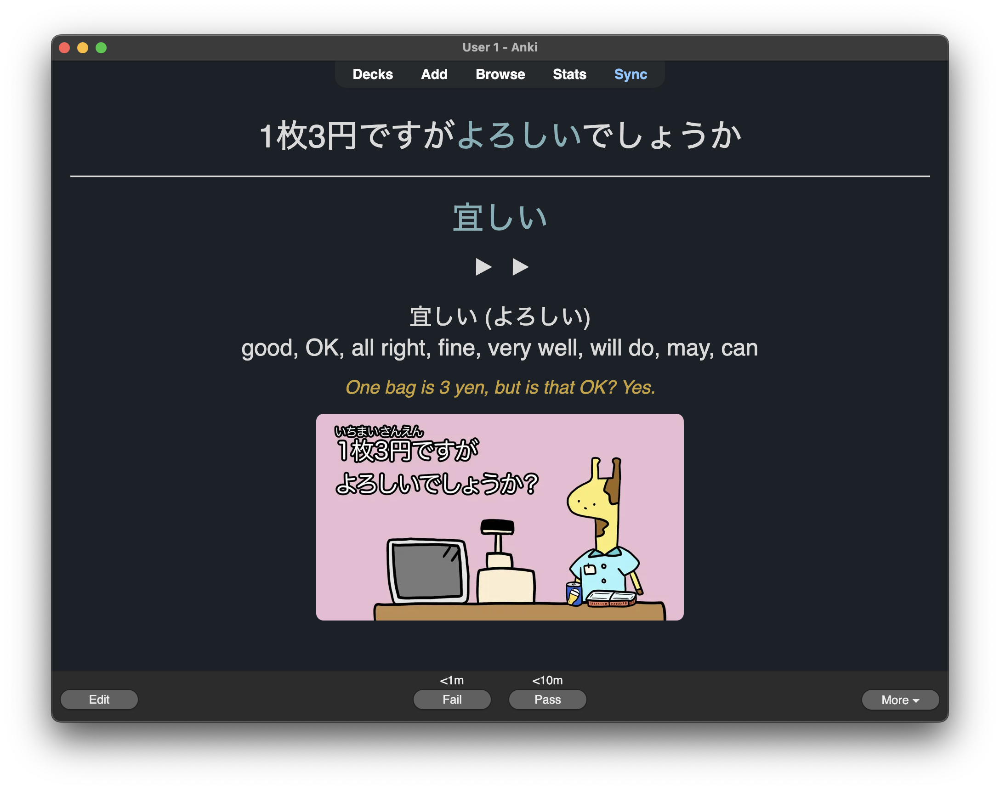
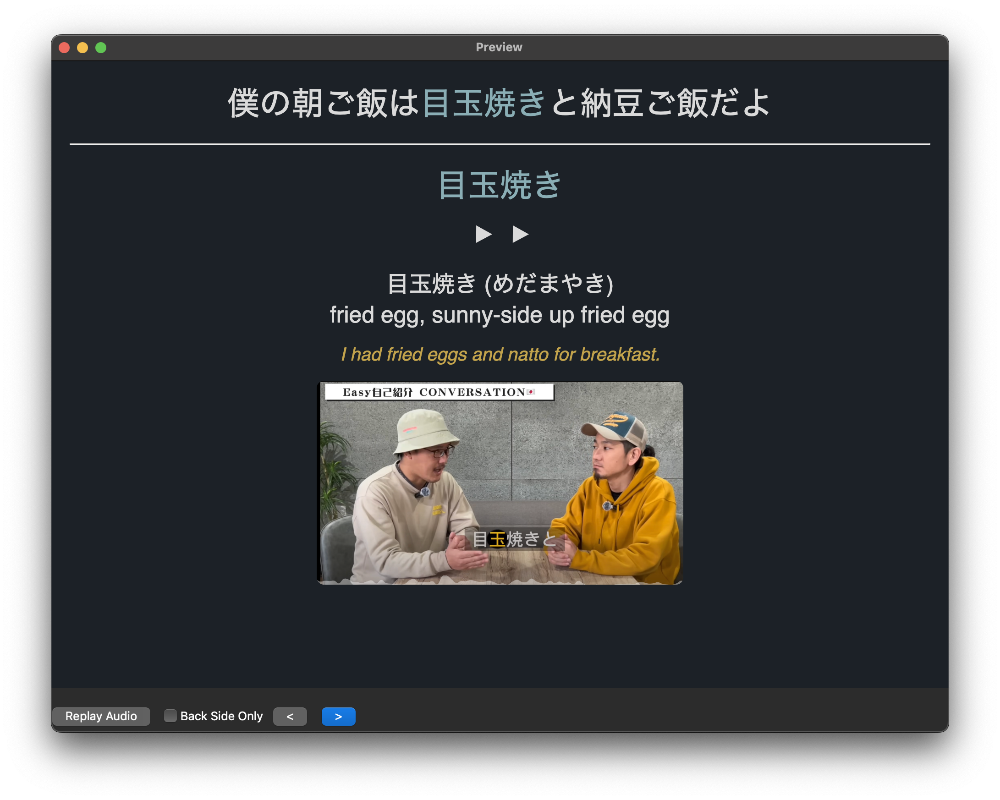
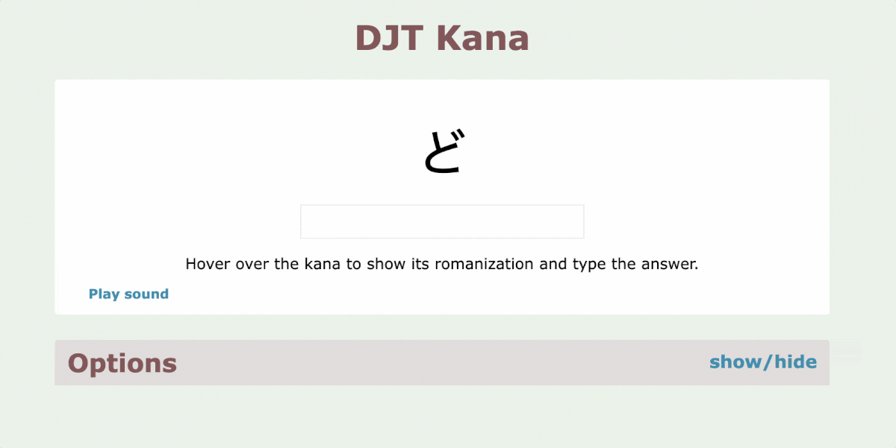

Sentence Mining Within the Core 6K Deck
I’ve worked through about two-thirds of the Core6k deck so far. At some point, I got bored with it and shifted to sentence mining—mainly picking out new words from content I actually enjoy, like shows, articles, or YouTube videos.
But every now and then, especially while reading the NHK Easy website, I come across words that turn out to be from the unseen part of the Core6k deck. Even though I haven’t officially studied those cards yet, I end up mining them naturally through immersion.
It’s a good reminder that sentence mining isn’t just for completely new words outside the deck. It can also overlap with words I would have eventually reached in Core6k—just in a way that feels much more alive and relevant.

Tags: japanese
Realizing I Need Grammar
Not knowing much grammar is becoming a real problem—something I’ve been really noticing now that I’ve moved to Japan. I had hoped to pick it up naturally through immersion, but since I’ve spent most of my time reviewing and adding new vocabulary and kanji readings, I feel like I’m missing the glue that holds everything together. It’s frustrating that I can’t form meaningful sentences when talking to people I meet. Even though I know a large number of isolated words, I still struggle to put them together in a way that makes sense. Just the other day, I met the owner of the izakaya next door, and when he started asking me questions about just moving here, I broke out in a sweat—I couldn’t find a way to respond beyond a few awkward words and gestures. In a way, when it comes to actual communication, I don’t feel much more advanced than I was two years ago.
 img: slam dunk
img: slam dunk
Tags: japanese
Japanese with Tanaka-san and Creating New Flashcards for Familiar Vocabulary

I’ve been sentence mining some new vocabulary words today from the beginner-friendly YouTube channel Learn Japanese with Tanaka san and wanted to share it here as I think it’s a good channel. Right now I have about 80-90% word comprehension on most videos, which works well since I understand most of what is being said but am still picking up some new, high-frequency words.
What I’ve found useful is that I’m also encountering words I already know from my Anki deck, but seeing them used in natural contexts and different sentence patterns. It’s been helpful for reinforcing my understanding and picking up more nuanced usage that I might have missed when just learning the isolated vocabulary. It’s one thing to know a word’s definition, but seeing how it actually works in conversation makes a difference.
I’ve been creating new flashcards for these already known words with the sentences from the videos, and now I’m wondering if I should delete the original cards from my core 6k deck since the new context-based ones seem more useful.
One of the cards I made today
Tags: japanese
The Wild Web of Language Learning Gurus
Today marks exactly two years since I started studying Japanese, and although I have made considerable progress, I’m feeling somewhat disappointed with my current level. I’ve spent some time reflecting on where I think this feeling comes from.
The Japanese Self-Study Community – A Double-Edged Sword
For the past two years, I have been self-studying Japanese. I prefer learning skills at my own pace rather than joining traditional classes; however, I do find it motivating to hear about other people’s experiences and to adjust my own systems when I come across good advice. In fact, it was Livakivi’s video I Learned Japanese 1 Hour a Day for 600 Days Straight that motivated me to set study goals and provided me with a sort of blueprint. Most of my process up until now has been based on Livakivi’s journey.
While the Japanese language learning community on YouTube provides me with inspiring content, it’s also marked by heated debates about learning methods. Some of its prominent content creators project unwavering confidence, competing to showcase perfect pitch accent while boasting about their relatively rapid path to fluency. The core message: achieve Japanese fluency quickly through intensive immersion—an idea popularized by the AJATT method. Some advocate living entirely in Japanese (AJATT stands for All Japanese All The Time), abandoning your English-speaking friends and sleeping with Japanese audio playing in the background, a pseudoscience coined ‘passive immersion’. They dismiss other approaches as wasteful, including traditional textbooks, with one popular creator claiming that studying less than two hours daily means you should quit altogether.
The problem is that someone who has become very skilled at something is not necessarily good at teaching or inspiring new students about that thing, and while mastery can build self-confidence, it can also lead to unrealistic expectations when teaching others or develop into a downright arrogant attitude. Some of this might have to do with the cognitive bias called “the expert blind spot,” which occurs when someone who has mastered a skill loses sight of what it’s like to be a beginner, or maybe it’s just the fact that some content creators also have a ‘unique’ course to sell you.
Whatever the reason, a recurring part of the narrative seems to be this “no pain, no gain” rhetoric which is so pervasive online nowadays. People often showcase their intense dedication and long hours as the only path to success, implying that those who can’t match this intensity somehow lack commitment. This overlooks the reality that people live different lives with varying circumstances, and the time someone can devote to learning doesn’t necessarily reflect their passion or desire to improve.
And that gets to the heart of my issue this morning—not my progress, but the comparison to others is what is making me feel unhappy. It’s learning 4,000 vocabulary words in two years and then seeing someone on Reddit who claims they learned 1,700 in just two weeks. Comparing ourselves to others is the quickest way to suck the joy out of anything we’re doing. That’s precisely why I spend very little time on social media these days. Even though I’m well aware of the pitfalls of comparison, I still let it get to me when it comes to language learning.
And so, I want to end on a positive note as well as a reminder to myself: What matters most is that I’ve improved consistently over these past two years, studying daily without giving up and building a consistent habit. I may not have aced the N1 proficiency test in eight months or shocked any natives with my perfect Japanese pitch accent, but I’m advancing at my own pace and enjoying the moments when I am able to do new things.
As Matsuoka Shuzo, Japan’s most positive man, would say: 諦めんなよ！Never give up!
Tags: japanese
Fried Eggs and Japanese Super Immersion
Two great things happened to me today:
I learned the Japanese word for ‘fried eggs,’ which I surprisingly never came across nor ever used in Japan, even though I love eating them. Maybe it’s due to my heavy addiction to convenience store bought tamago-sando, which uses chopped up boiled eggs mixed with mayonnaise.
Fried eggs are what Toriyama-san had for breakfast this morning. That in itself is not great for me per se; however, it comes from a video created by the guys behind a channel called Japanese Super Immersion, which was recommended to me this morning and I have been really enjoying.
Finding Entertaining and Beginner-friendly Content
I’ve had a hard time finding beginner level Japanese immersion content which is educational yet entertaining to watch. I easily get bored by the generic topics discussed on most language learning channels and when I find content that aligns with my interests its usually to difficult for me to enjoy.
What makes the conversations between Toriyama-san and Miyazaki-san entertaining to watch for me is that they are similar to my own friends, not taking themselves too seriously and joking while having a conversation. I feel like I could easily hang out with them in real life, which also makes me genuinely interested in what they have to say, and that seems to be the part I was missing so far with other channels.
One of several Anki flashcards I made this morning while watching ‘Japanese Super Immersion’
Tags: japanese
How I Learned Hiragana and Katakana
The Japanese written language is a fusion of three distinct scripts. Children in Japan first learn Hiragana and Katakana, before progressing to the more complex and vast set of Kanji characters, which were imported from China around the 5th century CE.
Phonetics
Hiragana and Katakana are phonetic scripts, meaning they visually represent sounds used in speech and don’t carry any meaning. While both character sets largely share the same basic syllables, Katakana includes additional characters for representing foreign sounds not traditionally found in Japanese. Both scripts serve different purposes within the language. Although not used this way in practice, you could technically spell native Japanese words using just these two scripts.
Memorizing Characters Using Mnemonics
I found memorizing Hiragana and Katakana fairly easy, and it took me about a week. What worked best was utilizing visual mnemonics that simplify remembering information through simple associations.
Here’s an example for memorizing the character ‘の.’ This character represents a syllable roughly pronounced as ‘no’ in the English word ‘not’. Associating it with a ‘No/not smoking’ sign, which is similar in shape to the hiragana character, was a helpful visual cue.

The internet is full of examples of mnemonics for the kana, so there is no need to make them up yourself.
Learning How to Write
Learning to write Hiragana and Katakana isn’t too challenging, but it’s important to follow the correct stroke order. Correct stroke order is crucial because it helps you intuitively write new characters and improves readability.
I started with some practice sheets to learn the stroke order, and then switched to a gridded notebook, writing the characters from memory.
Practice, Practice, Practice
During my first month in Japan back in 2020, I regularly did speed quizzes to recognize kana as quickly as possible. Pretty soon, the characters came naturally, and eventually, I didn’t have to rely on mnemonics. Reading Hiragana and Katakana now feels as familiar as reading the Latin script; I simply know their shapes and sounds without having to think about them.
Practicing Kana on the DJT Kana website
Practical Use in Daily Life
Hiragana is mostly used for Japanese-origin words, so without knowing the meanings of those words, it wasn’t very useful to me until I started learning some actual vocabulary.
The most useful thing for me right from the start was knowing Katakana. This script is primarily used for foreign loanwords, often imported from English, making them easy to understand. For instance, when I was searching for shampoo at a convenience store, I picked up a bottle with the text ‘シャンプー’ on it. These syllables spell ‘sha-n-puu,’ making it likely I had found the right product. Although only a small step, it started making things easier for me and marked my beginning of learning Japanese vocabulary.
 フレッシュジュース / FU-RE-S-SHU-JU-U-SU / Fresh Juice. Illustration of shop sign in Nagasaki
フレッシュジュース / FU-RE-S-SHU-JU-U-SU / Fresh Juice. Illustration of shop sign in Nagasaki
Tags: japanese